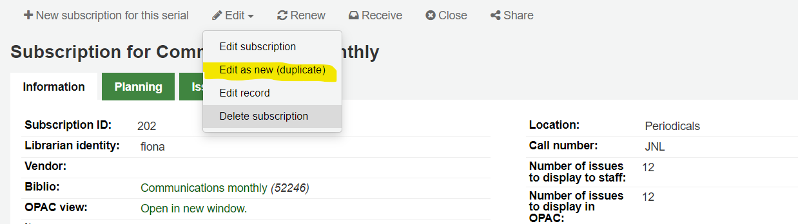
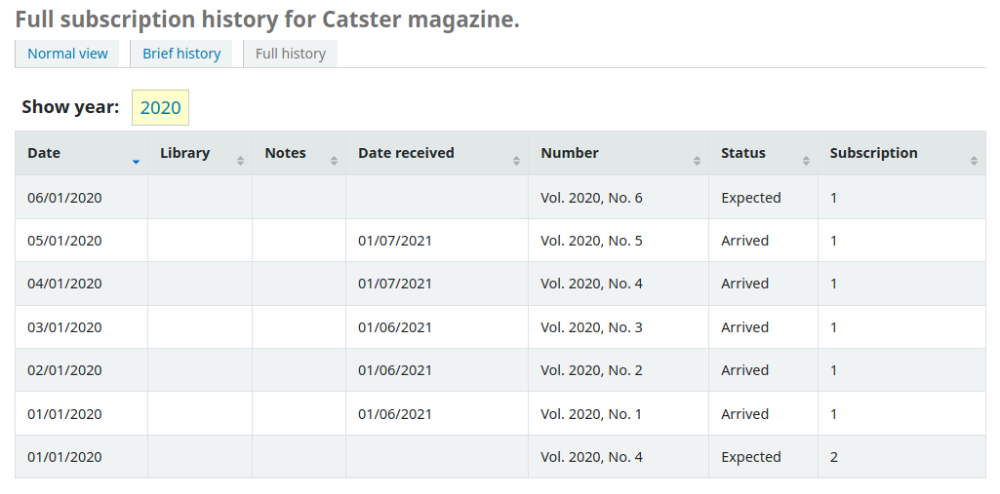

期刊
進入螢幕上方的 ‘更多’ 選單，選擇 ‘期刊’ 或點擊Koha館員主介面上的 ‘期刊’，就可以進入序列操作。 Koha的期刊模組用於追蹤期刊、報紙和其他定期到來的館藏。
與所有模組一樣，在使用串行模組之前，請確保仔細閱讀相關的 :實施借出清單<serials-configuration-label>`和 :`系統偏好<serials-系統偏好-label>。
到那： 其他 > 期刊
Managing serial frequencies
Koha保留出版刊期的記錄，供管理與複製之用。
到那： 其他 > 期刊 > 管理刊期
從此頁面您可以檢視系統內現有的刊期。
您可以編輯、刪除和建立新的。
新增刊期
要新增新刊期，請點擊 ‘新刊期’ 按鈕。
說明：這是建立新的期刊訂閱時將出現在下拉選單中的名稱；確保它是說明性的
單位：這是用於計算出版週期的單位。可以選擇無（用於不定期的刊期）、日、週、月或年。
每單元的問題：這是在上面選擇的單元期間出版的問題（這通常是1）。
每期單位：這是我們必須計算多少單位，直到下一期出版。
顯示順序：這是在 :ref:`建立一個新的訂閱<add-a-subscription-label>`時，在下拉選單中的顯示順序（你可能想把最常用的刊期放在最上面，把不常用的放在最下面；最上面的位置是0）。幾個頻率可以有相同的顯示順序值。如果是這種情況，它們將按照建立的順序出現。
小技巧
為了理解 ‘每單位的問題’ 與 ‘每期的單位’，你可以把它理解為 ‘<issues per unit> 每 <units per issues> <unit>’。例如，雙週的刊期（每兩週）將是 ‘每兩週一期’。所以 ‘每單位的問題’ 將是1，’每期的單位’ 將是2。更多例子見下文。
例子
下面是一些最常見的連續出版物刊期的例子。
刊期 |
單位 |
每單位的期數 |
每期的數量 |
|---|---|---|---|
日刊 (“1日1期”) |
天 |
1 |
1 |
每週三次(“每 1 週 3 期”) |
週 |
3 |
1 |
半周一次(“每 1 週 2 期”) |
週 |
2 |
1 |
每週(“每 1 週 1 期”) |
週 |
1 |
1 |
雙週刊(“每兩週一期”) |
週 |
1 |
2 |
月刊 (“每1個月一期”) |
月 |
1 |
1 |
雙月刊（“每 2 個月一期”） |
月 |
1 |
2 |
季度(“每 3 個月 1 期”) |
月 |
1 |
3 |
半年刊(“每 6 個月 1 期”) |
月 |
1 |
6 |
年度(“每 1 年 1 期”) |
年 |
1 |
1 |
兩年期(“每兩年一期”) |
年 |
1 |
2 |
管理期刊編碼模式
新增期刊編碼模式後可以儲存供以後使用。可經由 ‘管理編碼模式’ 頁面取用它。
到那： 其他 > 期刊 > 管理編碼模式
此頁面列出您製作的編碼模式，以及若干基本的模式。
备注
如果您從舊版本的 Koha（3.14 之前）升級，您將看到為模式列出的 ‘備份模式’。 這就是 Koha 保存舊編號模式的方式。 您可以從這裡編輯它們，為它們賦予更有意義的名稱。
新增編碼模式
要新增新的模式，請點擊 ‘新的編號模式’ 按鈕。
名稱：這是在 :ref:`建立新的期刊訂閱<add-a-subscription-label>`時將出現在下拉選單中的名稱； 確保它是描述性的。
說明：這是進一步說明編號模式； 這在建立新訂閱時不會出現，它僅顯示在 編號模式表（見上文）。
編號公式：這是用來建立每期編號的內容。你可以使用最多三個變數{X}、{Y}和{Z}（見下文）。與變數一起，你可以輸入任何你想出現在問題編號中的文字。你還必須包括你想在刊號中看到的任何空格。每期的文字將保持不變，而變數將有所不同。
警告
變數必須是大寫字母並位於大括號之間。
例子
卷. {X} 編號 {Y}
在期刊為期數 {X}
{X} {Y}
顯示順序：這是在 :ref:`建立一個新的訂閱<add-a-subscription-label>`時，在下拉選單中的顯示順序（你可能想把最常用的刊期放在最上面，把不常用的放在最下面；最上面的位置是0）。幾個頻率可以有相同的顯示順序值。如果是這種情況，它們將按照建立的順序出現。
在表中，您需要為每個變量輸入參數。
標籤：這僅僅是一個變數的名稱，它不用於其他任何地方，但它有助於識別該變數應該是什麼。
新增：將多少個數字或單位新增到變數中。
每個：新增到變數中的數字或每單位新增多少個問題。
設定回：這用於流通編號；輸入起始編號。
當超過：這個用於流通編號； 輸入最後一個數字。
小技巧
在填寫這四個參數（’新增’、’每期’、’設回’ 和 ‘大於時’）時，要一欄一欄地工作，並把它看成一個句子。 “每1期加1，大於10時設為1”。
格式化：如果您希望單字出現在您的問題編號中而不是數字，則使用此選項。 你可以選擇
日期名稱（星期一、星期二、星期三等）
日期名稱（縮寫）（週一、週二、週三等）
月份名稱（一月、二月、三月等）
月份名稱（縮寫）（一月、二月、三月等）
季節名稱（春、夏、秋、冬）
季節名稱（縮寫）（Spr、Sum、Fal、Win）
警告
在填寫表格時，你必須始終使用數字，甚至代表日、月或季節的名稱。以下是每一個數字的對應關係
天 |
星期日 |
0 |
星期一 |
1 |
|
星期二 |
2 |
|
星期三 |
3 |
|
星期四 |
4 |
|
星期五 |
5 |
|
星期六 |
6 |
|
月 |
一月 |
0 |
二月 |
1 |
|
三月 |
2 |
|
四月 |
3 |
|
五月 |
4 |
|
六月 |
5 |
|
七月 |
6 |
|
八月 |
7 |
|
九月 |
8 |
|
十月 |
9 |
|
十一月 |
10 |
|
十二月 |
11 |
|
季節 |
春季 |
0 |
夏天 |
1 |
|
秋季 |
2 |
|
冬季 |
3 |
在保存編號模式之前，您可以對其進行測試以確保其行為符合您的預期。
刊期: 選擇一個適合您編號模式的刊期
首期發布日期：選擇您的測試開始的日期。
訂閱時長：輸入期數、週數或月數來測試您的編號模式； 如果編號模式是循環的，建議至少嘗試兩次循環以查看循環的變化並確保其行為正確。
區域設定：如果使用日期、月份或季節的名稱，您可以選擇顯示這些名稱的語言。
备注
區域設定目前不適用於季節名稱。
接下來輸入變數的參數。
開始於：為每個變數輸入第一個值，這些應該是上面 ‘首期出版日期’ 中輸入的問題值。
內部計數器：輸入流通中已經過了多少期，以便Koha能計算出何時流通回來。
點擊 ‘測試模式’ 以查看結果。 如果結果符合您的預期，您可以保存編號模式。 如果結果不符合您的預期，請返回並調整參數並再次測試。
例子
月刊的月份和年份
編號公式：{X} {Y}
X
Y
Z
標籤
月
年
新增
1
1
每次
1
12
設定回
0
0
當更多
11
99999
正在格式化
月份名稱
月刊的卷數
編號公式：Vol.{X} No.{Y}
X
Y
Z
標籤
卷
數字
新增
1
1
每次
12
1
設定回
0
1
當更多
99999
12
正在格式化
季刊的季節和年份
編號公式：{X} {Y}
X
Y
Z
標籤
季
年
新增
1
1
每次
1
4
設定回
0
0
當更多
3
99999
正在格式化
季節名稱
每周期刊的卷數和數量
編號公式：Vol.{X} No.{Y}
X
Y
Z
標籤
卷
數字
新增
1
1
每次
52
1
設定回
0
1
當更多
99999
52
正在格式化
新增訂閱
點選任何書目記錄的 ‘新增’ 鈕並選擇 ‘新建訂閱’ 就能新增訂閱
或點擊期刊模組中的 ‘新訂閱’ 按鈕
若從期刊模組輸入新的訂閱，將出現空白表單(若從書目紀錄新增表單，此表單將包括記錄號碼的資訊)。

供應商：可以透過搜尋 採訪模組 或手動輸入供應商 ID 號來找到供應商
供應商資訊不是必備
需鍵入供應商資訊，才能發出催缺資訊

記錄：您希望將此訂閱連結到的 MARC 記錄的書目編號
如果您從書目記錄建立新訂閱，則書目編號和標題將已填寫
您可以通過點擊方框下方的 ‘搜尋記錄’ 連結來搜尋現有記錄
如果此訂閱沒有現有的書目記錄，您可以通過點擊方框下面的 ‘建立記錄’ 連結來建立一個
您也可以在第一個框中手動輸入記錄的書目編號
接下來你可以選擇是否在收到問題時建立一個新的館藏
备注
如果您在期刊中新增條碼或流通條碼，請選擇在接收時建立館藏
出現不規則問題時：選擇如何處理訂閱中的不規則問題，跳過問題編號或保留問題編號
备注
如果數字始終是連續的，請選擇 ‘保留問題編號’
手動歷史紀錄：如果選中，一旦訂閱被保存，你就可以輸入預測模式之外的序列。例如，’本館有1974年6月至1996年12月的期刊’。要這樣做，一旦訂閱被保存，就到訂閱詳情頁的’計劃’標籤，點擊’編輯歷史’。
索書號: 您館藏的索書號或索書號字首, 這會複製到館藏, 如果他們是在接收時產生的.
圖書館: 是擁有該訂閱的分館。
若多個圖書館訂閱此期刊，您需為每個圖書館新增訂閱
使用訂閱資訊頁面的 ‘編輯新增(複製)’ 選項，或改變 ‘圖書館’ 欄位，都可以做到

公開說明: 顯示於 OPAC 供讀者使用
不公開的說明: 只有提供館員通過館員介面才能看到的說明。
讀者通知: 選項讓您把通知發給經由 OPAC 訂閱此期刊的讀者。
要顯示此選項，您需要確保在 :ref:`’通知和單據’ tool <notices-and-slips-label>`中設定了’期刊(新期刊)’-型通知
位置：上架位置，如果在接收時建立，這將被複製到館藏中。
館藏類型：如果在接收時建立館藏，請選擇所建立館藏的類型。
Item type for older issues: if creating items upon reception, choose the item type that will be assigned to previous issues when receiving new issues. This will only appear only if the makePreviousSerialAvailable is enabled.
寬限期: 自動把期刊從 ‘預期’ 狀態轉移為 ‘逾期’之前的天數。需把 SerialsUpdate.pl 工作排程 設定為定期執行。
向館員顯示的期數：這允許您在書目記錄的 ‘訂閱’ 標籤中控制館員介面目錄中預設顯示的問題數量
If this is left empty, the value of the StaffSerialIssueDisplayCount system preference will be used.
备注
如果你建立在期刊為期數的館藏，這個不會影響期刊數量顯示在預約分頁中。它只會影響期刊數量展示在期刊館藏分頁裡。
公開顯示的期數：這允許您控制在 OPAC 中預設顯示的期數，在書目記錄的 ‘訂閱’ 標籤
If this is left empty, the value of the OPACSerialIssueDisplayCount system preference will be used.
备注
如果你建立在期刊為期數的館藏，這個不會影響期刊數量顯示在預約分頁中。它只會影響期刊數量展示在期刊館藏分頁裡。
填入資料後您可按 ‘下一步’ 進入預測模式資訊。
首期出版日: 輸入館藏首期的日期，預期的出版模式由此開始計算
刊期: 選擇您期刊的刊期. 進入 ‘管理刊期’ 可看到客製化與預設的刊期. 如果您要的刊期不在這裡, 您可以 新增刊期.
訂閱期限: 即訂閱期數、週數或月數。也可用於續借警示。
訂閱開始日期: 是開始訂閱的日期。用於續借警示。
訂閱到期日期: 只供有到期日的訂閱使用(即過期期刊)。
編碼模式：選擇問題的編號方式。 此處的選項是 管理編號模式 部分中的選項。
如果你需要的編號模式還沒有被建立，你可以透過點擊 ‘顯示進階模式’，然後點擊 ‘修改模式’ 來建立一個新的模式。這與 :ref:`新增一個編號模式<adding-serial-numbering-pattern-label>`（見上節）是一樣的。
區域設定：如果使用日期、月份或季節的名稱，您可以選擇顯示這些名稱的語言。
备注
區域設定目前不適用於季節名稱。
選定 ‘編碼模式’ 後即出現編號表單。
開始於：為每個變數輸入第一個值，這些應該是上面 ‘首期出版日期’ 中輸入的問題值。
內部計數器：輸入流通中已經過了多少期，以便Koha能計算出何時流通回來。
例如：若收到的第一期是 “vol. 4, no. 1, iss. 796”，您需設定為 “inner counter = 0” 若是 “vol. 4, no. 2, iss. 797”，則內部計數器應為 “1”。
填入資料後按 ‘測試預期模式’ 鈕檢視系統產生的卷期，若出現不規則卷期可從清單選擇不存在的卷期。
若已新增 客製化欄位，在螢幕下方的按鈕上將顯示為可編輯
勾選 ‘儲存訂閱’ 以儲存輸入的資訊。
备注
`在維基 <https://wiki.koha-community.org/wiki/Serial_Pattern_Library>`__上的期刊範例圖書館中找到樣本期刊範本。
編輯訂閱
從訂閱頁面按下 ‘編輯’ 與 ‘編輯訂閱’，就能編輯訂閱的內容。此作為將回至 creating a new subscription。
您也可以批次編輯訂閱。先搜尋想改變的訂閱。在結果頁面，勾選待編輯的訂閱選項。將出現 ‘編輯選定的期刊’ 連結。
從這裡，您可以改變：
代理商
書架位置
圖書館
館藏類型
公開的說明
不公開的說明
簽收期刊時，是否新增館藏
到期日
任何 定制欄位
备注
不變更欄位內容使用原來的值。
接收期刊
可從多個地簽收期刊。找到訂閱後，使用期刊頁面上方的搜尋盒找到欲簽收的期刊：
從搜尋結果裡，可以點選 ‘簽收期刊’ 按鈕；或點選訂閱題名，再按下 ‘收到’ 鈕。
從 ‘期刊合集’ 頁面簽收期刊。在訂閱摘要頁面左方有個連結至 ‘期刊合集’ 的選單
在打開的頁面中，勾選您要接收的期刊（預設情況下應勾選預期的期刊），然後點擊 ‘編輯期刊’。
所有的三個選項將打開收到刊期表單：
從狀態下拉選單選取 ‘到館’，標記已收到該期刊。
若打算把每期都新增為一個館藏記錄，則於選取 ‘到館’ 之後將出現 館藏新增表單。可以使用表格底部的’此館藏要複製的份數’選項添加多個副本。
填寫補篇資訊，供補篇的刊期使用。
在 “補篇” 之後的盒內鍵入完整編碼就不會從主編號取用/自動填入編號，祗取用從 “補篇” 之後的盒內完整編碼置於 [MARC21 952$h] (若您新增館藏紀錄)。
例如，若希望顯示它則鍵入完整的內容：”v.69 no.3 (Mar. 2015) suppl.”
若打算把每期都新增為一個館藏記錄，則 新增館藏表單 將出現供各期使用
鍵入您的資訊後，可以勾選 ‘儲存’
期刊合集
從期刊選單可以看到每個訂閱期刊合集的管理頁面。
在此頁面中，您可以管理與訂閱期刊相關的其他任務，例如接收多個期刊和編輯。
按下產生鈕，產生下一期供館員標記並把稍早那期自動標記為 ‘遲到’。
勾選編輯欄中一個或多個以前的期刊框，然後點擊編輯期刊按鈕。這將使你進入與你在 :ref:`接收問題<receive-issues-label>`時相同的螢幕。在那裡，你可以編輯編號、日期、狀態，並新增說明。
新增傳閱清單
A routing list is a list of people who receive the serial before it goes to the shelf. To enable routing lists, set your RoutingSerials preference to ‘Use’.
從訂閱頁面左方可見到 ‘新增傳閱清單’ 或 ‘編輯傳閱清單’ 連結
勾選連結，將進入新增傳閱清單的表。
從此點選 ‘新增收件人’ 把讀者加入傳閱清單。從選單裡可以用部份讀者名稱、所屬圖書館與讀者類型篩選讀者。
勾選每個名稱右方的 ‘新增’ 將新增至傳閱清單。選定所有的人加入傳閱清單時，勾選 ‘關閉’ 按鈕，就轉入傳閱清單。
From this form, you can play with the order of the users and add notes. If you always add the same note, you can enter it in the RoutingListNote system preference.
如果清單看起來像您期望的那樣，請點擊 ‘儲存’。
接下來，您將看到傳閱清單的預覽。然後進入預覽階段。勾選 ‘儲存並預覽傳閱清單’。則開啟列印版本的傳閱清單。
If RoutingListAddReserves is enabled, patrons listed in the routing list will automatically be added to the holds list for the issue.
進入讀者記錄的 傳閱清單分頁 就能看到該讀者參加的傳閱清單。在 您的傳閱清單 分頁登入 OPAC 就能看到自己的傳閱清單。
館員介面的訂閱
訂閱資訊將顯示在書目記錄的 ‘訂閱’ 分頁
按 ‘訂閱詳情’ 連結將進入館員介面的訂閱摘要頁面。
若您使用 採訪 模組追蹤 期刊訂閱，就能在訂閱詳情看到 ‘採訪詳情’ 分頁。

备注
您可以在管理模組的 ‘Table settings’ 部份, 在OPAC項目中自定義此表的列（table id：orders）。
OPAC 的訂閱
When viewing the subscription in the OPAC there will be several options. You can choose which tab appears by default with the opacSerialDefaultTab system preference.
館員介面的連結，在書目記錄將出現訂閱分頁。
Under this tab will appear the number of issues you chose when setting up the subscription or in your OPACSerialIssueDisplayCount system preference. Clicking the ‘More details’ link will provide you with additional information about the serial history. You can set the default view of the serial history in the OPAC with the SubscriptionHistory system preference.
有兩種檢視：簡略與完整。簡略期刊訂閱歷史將顯示訂閱的基本資訊。
從簡略檢視讀者按下 ‘訂閱新到期刊電子郵件通知’ 鈕就能收取新到期刊的通知。必須選擇告知讀者 建立訂閱 此連結才會生效。
從館員介面的訂閱頁面右方的 ‘資訊’ 分頁，可以檢視訂閱期刊到館通知的內容。
完整檢視顯示詳情，依年分排列訂閱事宜

催缺延遲的期刊
發生延遲期刊時，Koha 可寄送電子郵件給期刊供應商。在期刊首頁左方有個 ‘催缺’ 連結。
連結至催缺也顯示在訂閱詳情頁面的左方
沒有設定催缺通知，將看到警示訊息，應先設定該通知 通知和單據工具。
勾選 ‘催缺’ 將開啟表單，詢問催缺的期刊供應商。
從最新到館清單裡，可以選擇勾選遲到期刊、通知模版以及勾選 ‘送出通知’ 鈕，發送催缺電子郵件。
您還可以透過選擇 a CSV 設定檔案 並點擊 ‘下載選定的催缺’ 將結果匯出到 CSV 檔案。
檢查期刊到期日
新增期刊時輸入訂閱期限，再使用檢查到期工具可以看到訂閱的到期日。從期刊選單裡勾選 ‘檢查到期日’ 就能使用該工具。
在出現的表格中，您至少需要輸入一個日期作為搜尋依據。 您還可以按書名、ISBN 或圖書館進行搜尋。
可從結果裡看到所有在鍵入日期前將終止的訂購。從此可選擇檢視訂購詳情或更新內容。
若有多個訂閱，可以勾選它們並按 ‘續訂勾選的訂閱’ 一次全部更新。將以同樣的期程續訂 (即，最後一次訂期為一年，將續訂一年；若最後一次訂期為16期，則續訂為16期)。
續借期刊
若期刊已到期就不會收到新的期刊。可以從訂閱詳情頁面上方的 ‘續訂’ 鈕執行續訂工作。
點選 ‘續借’ 按鈕將出現續借的選項。
開始日期: 輸入您的訂閱期開始的日期。
訂閱時長：輸入訂閱持續的期數、週數或月數
Library: enter the library for which this subscription is, this will only appear if RenewSerialAddsSuggestion is set to ‘Add’
Note for the librarian that will manage your renewal request: enter any notes you might have about this renewal. This will only appear if RenewSerialAddsSuggestion is set to ‘Add’
點擊 ‘提交’。
If your RenewSerialAddsSuggestion system preference is enabled, renewing a subscription will create a purchase suggestion in the acquisitions module so that your acquisitions staff can manage it.
搜尋期刊
期刊模組上方有搜尋盒可以用 ISSN 或題名搜尋期刊的訂閱事宜。
點選 ‘送出’ 鈕右方的 ‘進階搜尋’ 連結，即可搜尋您的期刊。

备注
如果您有可搜尋的 :ref:`其他欄位<additional-fields-label>，它們將顯示在此表單中。
可從結果頁面搜尋盒下方的欄位篩選結果，並且以結果上方的工具列調整顯示的結果數。